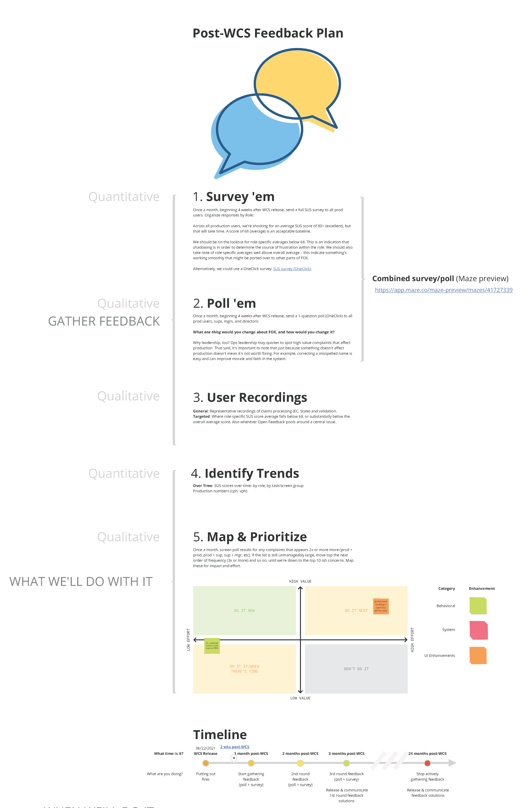
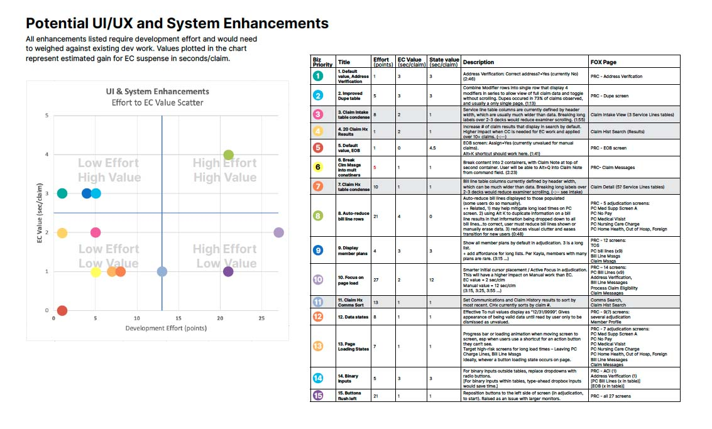
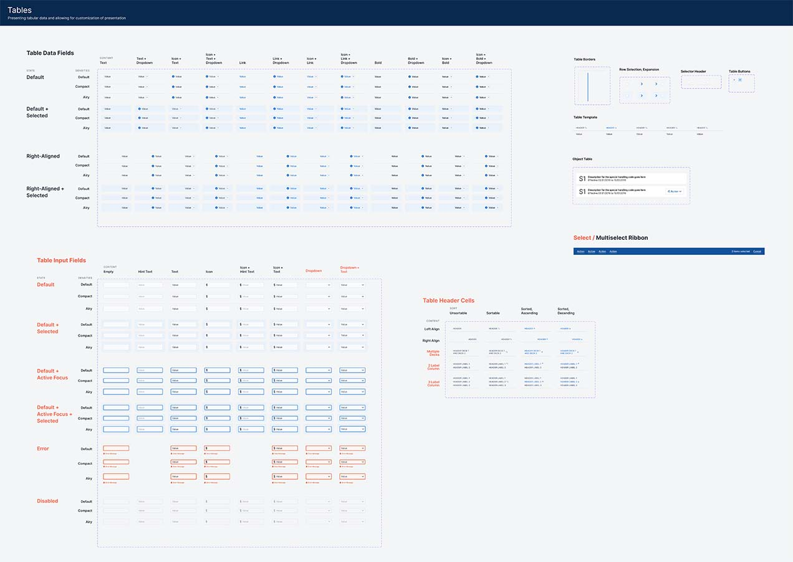

design ops, research
When the new claims processing system launched to a small group of pilot users working with live claims. At the two-week checkpoint, operations leadership raised concerns – staff were working at a slower rate, and they worried that more examiners would be needed to keep up with day-to-day processing. A Production Analysis Team was assembled. As the lone UXer at the time, I was a chief contributor. The goal of the team was to investigate slowdown causes, analyze each, and provide potential solutions with an eye on speeding production.
Before launch, I had outlined a plan to capture and act on feedback from users, so I felt well positioned to contribute from the start. Many of the methods for feedback capture, analysis and prioritization could be reapplied.
As updates to leadership progressed, I shared the enhancement list back to Operations managers so they could offer their own prioritization, which was influenced directly by production users. In most cases, their priorities aligned with the gain/effort index.
Taking the data visualization a step further, I mapped all the enhancements onto a claim processing screen flow, which made the problem screens easy to see. Diminishing returns were represented by overlap, and reinforced by a total potential gain per screen across the bottom of the map.
This was an exceptionally satisfying exercise in data visualization. As one director pointed out, These maps make it easy to understand and make decisions. They’re very effective.
design ops
Well before a product owner was assigned to our second application project, the design team started work on our Alpine design system. Prior experiences with tech debt still stung, and we were determined to go into our next big application project with a modular UI kit in hand.
Alpine is a UI framework designed to make UnitedHealthcare's data-heavy experiences clear, consistent, and easy to build. Its creation was collaborative. Documentation and components were largely created by Laura Wied, and the Gitbook site framed out by Mike Hartman. When both left UHC for other oppotunities, it fell to me to push Alpine across the finish line and get it built. Content had to be finished, the PO convinced of its value, and the dev team cajoled into building components and adding code standards.
After a presentation on design system benefits and cautionary tale or two about the hazards of building without one (all the more vivid having been drawn from personal experience), the product owner came to value the concept of the design system. After initially proposing a jump straight to page builds, the scrum team shifted attention to Alpine once it became apparent that the PO was on board. Code standrds were added to the documentation and components were built and refined over several sprints.
Alpine was designed specifically for UnitedHealthcare product teams building data-heavy applications.
Alpine's design patterns are designed to be fast, efficient and adaptable. By addressing common, recurring situations with repeatable patterns, teams can focus on unique problems, save time, and reduce technical debt. Alpine is already making experiences more consistent within – and across – complex applications. The design system allows UHC to build affordable, scalable, and testable user interfaces.
View Alpine UI Kit (Figma).
"Design systems create better products when they provide both unity and cohesion: Unity–things feel complete, all the brand elements work together as one; Cohesion is the quality that makes your UI easy to understand across the experience." — Expressive Design Systems